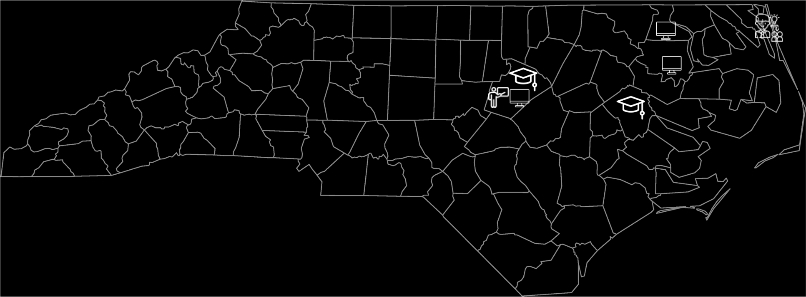
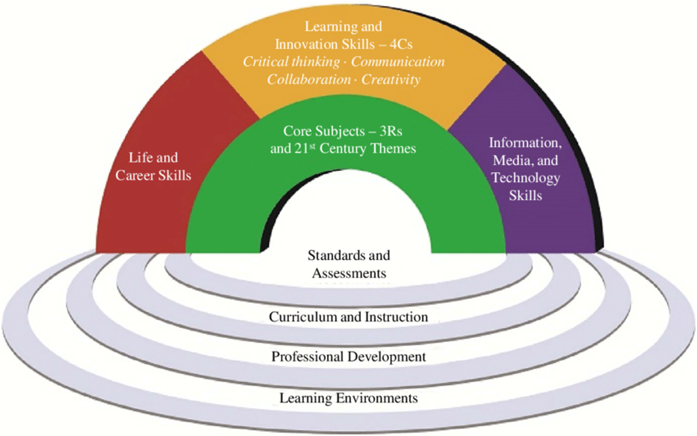
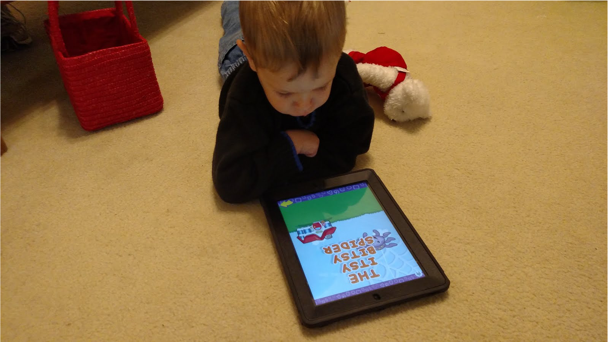
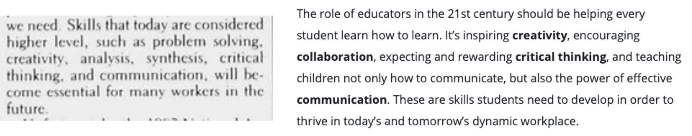

Revisiting "21st Century Learning"
Mark Samberg, Ed.D.
October 28, 2020
@mjsamberg
About Me
"21st Century Learning"
Educational Leadership Magazine, October 1, 1983
![Excerpt from article entitled 'Education for the 21st Century: The nature of society and education is rapidly being transformed 1t tednologv, the information era, and demograpic shifts.' Excerpt follows: The core of the industrial age is powered machinery; the core of the information era is the computer.
* The industrial age replaced manual work and magnified physical strength; the information era enables us to replace mental work and magnify mental capabilities.
* Goods produced in the industrial age are expended; information, the product of the information era, cannot be depleted.
* Energy-oil, coal. nuclear power is the driving force in the industrial age; education is the driving force in the information era. An effort to improve the quality of education is emerging as a national priority. Definitions of 'quality' vary from achieving high scores on standard-ized tests to adding more required courses to the curriculum. More and more careers will require backgrounds in science, mathematics, and computer science. Fewer careers will be open to the undereducated. Just increasing course requirements, however, will not produce the high quality of education we need. Skills that today are considered higher level, such as problem solving, creativity, analysis, synthesis, critical thinking, and communication, will become essential for many workers in the future.](content/edleadership-article.png)
The rise of the "Digital Native"
There are no more "20th Century Students"
- A high school student graduating today was born in 2003.
- A college undergraduate graduating today was born in 1999.
- The iPad was released in 2010.
![LEARNING HUB
What is a 21st century education?
04/23/2019
By Sara Hallerman, Colon Lewis, and Brad Dresbach
We’ve all heard the term. Many of us even use it regularly. And we probably all have a gut feeling of what 21st century learning or a 21st century education is. But can we define it?
It might be easier to define it by first explaining what a 21st century education is not (or what a 20th century education was—and still is in many places).A 21st century education is not a bunch of students sitting quietly at desks, in neat rows, writing down every word that the teacher says or writes on the blackboard (or smartboard). It’s not teaching to the test, telling students what they need to memorize to get an A+, assuming every child is or should be on the same path, or measuring schools or teachers solely by average ACT scores and college acceptance rates. And it’s not something that ends at 3:00 every day, or on Friday of every week, or even in the spring of each year. It’s a lifelong journey. As Dr. Kimberly Pietsch Miller, superintendent of Bexley City Schools (OH), said, 'The finish line isn’t May of 12th grade.' Defining and delivering 21st century learning is a little messier than that. It’s a little more complicated. A little more nuanced. A whole lot harder to assess. And when done correctly, it creates environments in which engaged students are actively shaping their learning. The role of educators in the 21st century should be helping every student learn how to learn. It’s inspiring creativity, encouraging collaboration, expecting and rewarding critical thinking, and teaching children not only how to communicate, but also the power of effective communication. These are skills students need to develop in order to thrive in today’s and tomorrow’s dynamic workplace.](content/learninghub.png)
1983 vs. 2019
Reality
![Exhibit 11 disaggregates the data on grade 3–8 students’ proficiency in both mathematics and ELA for White, Black, and Hispanic students (the data for Hispanic students has been available only since 2010). This graph shows the persistent historical achievement gaps. In every year, the percentage of Black and Hispanic students reaching
BACKGROUND 22
Percentage of Grade 3–8 Students Proficient in both Math and ELA
proficiency is substantially less than the percentage of White students, with the three groups showing similar patterns of increased, unchanged, or decreased percentages proficient through the years.
During the 12-year period from 1993 through 2005, when the overall percentage of proficient students increased steadily, there was also some decrease in the achievement gap between Black and White students, dropping from 33.3% to 21.8%, about a 1% change per year. These improvements were achieved through policy decisions and investments made to enhance the educator workforce and improve schools. However, these investments were not sustained. The achievement gap has increased with each change to more rigorous standards, rather than continuing to close. Specifically, the proficiency gap between Black and White students was 29.9% in 2013, the first year the current standards were implemented, and remained at 30.2% in 2018. The gap between Hispanic and White students has increased slightly during this period, from 22.8% in 2013 to 24.6% in 2018.](content/leandro.png)
Libraries Lead the Digital Revolution
Among the many things we’ve learned in the past year – the ability to connect to and utilize the Internet, the ability to evaluate what you’re finding online, and the ability to contribute online…
…Is as important as reading and writing.
1 in 4 NC students do not have broadband Internet access at home.
It's complicated....
...And it's more than just running more fiber or making it cheaper.
Getting Patrons Online
- Technology lending
- Hotspot rentals
- Helping people register for Internet
-
Being aware of emerging technologies and resources
- Lifeline Program
- Emergency Broadband Benefit Program
- Cellular Hotspots
- SpaceX Starlink Service
- TV Whitespace and Private LTE